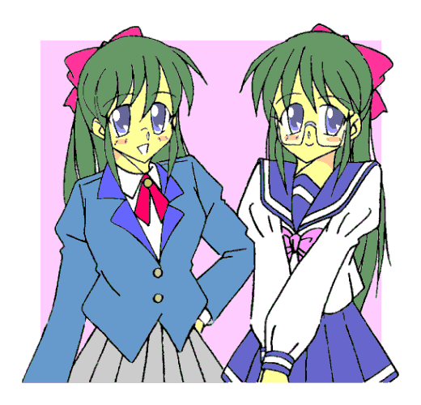
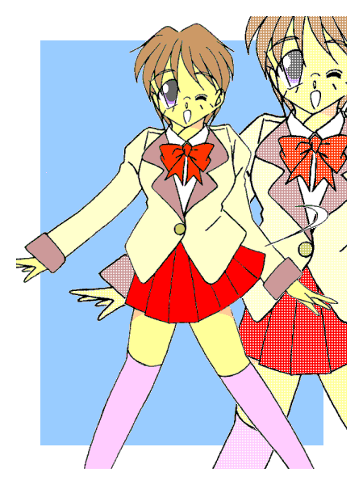
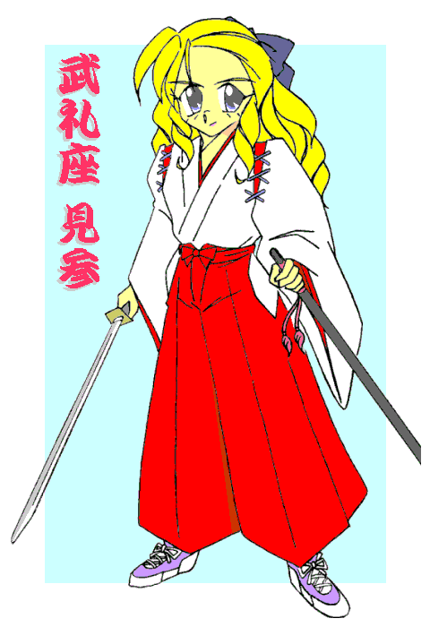

試験休み……そして春休みに突入すると、まるで花が咲く季節に合わせたかのように、アマッドネスが次々と現れるようになった。
とはいえ、その出現頻度はほぼ一日おきの上に、出現する個体は常に一体。変身、そして戦乙女としての戦いにも慣れてきた清良＝セーラは、これらを次々と撃退、浄化していった。
だが、彼——彼女はアマッドネスを倒すことはできても、その出現を未然に防ぐことは出来ない。
そのため常に後手に回り、そして必ず女性へと転換させられる「犠牲者」が出てしまう……
戦乙女セーラ Ｖｏｌ．３
作：城弾
清良の住む福真市の警察署——福真署では連続する性転換事件とそれに付随する“怪物”騒ぎの捜査本部が設置され、対策会議が開かれていた。
「それでは一城君、始めてくれ」
「はい」
本部長の言葉に女性捜査官が、短く返事をする。
彼女の名は一城薫子。髪の短いボーイッシュな印象の婦人警官である。被害者たちの事情聴取に駆りだされているのだ。
本来は男性である被害者たちも、女性が相手だと気持ちが落ち着くのか、数々の証言が彼女を通して集まっている。
しかし、これまでで警察が掴んでいるのは……
＊半人半獣の化け物——“怪物”の存在。
＊それに襲われると意識を失い、そして取り戻したときには、男性は皆、体が女性に変わっている。
＊その“怪物”を倒す少女がいるらしい。
……それだけであった。
これではどうにも手の打ちようがない。何しろ“怪物”たちは、文字通り「神出鬼没」なのだ。
加えて最後の「“怪物”を倒す少女」については、「川沿いをレオタード姿で飛行していた」だの、「人魚のように東京湾を高速で泳いでいた」だのといった、にわかには信じられない眉唾物の証言がある。
ちなみに二つ目のものは、巡視艇の乗組員たちが口をそろえて証言している。そして、やはり集団性転換事件の時に現場に居合わせた「スクール水着姿でオートバイに乗る少女」は、自分たちの“身内”である白バイ警官たちが目撃している。
しかも、ノーヘルで暴走行為をしていた高校生男子と思しき者が、突然その姿に変身したとまで——
「どうにもこうにも……まるで子ども向けのドラマみたいな話だな」
資料をめくりながら、本部長の末倉がぼやいてみせた。
「ところで本部長、その“怪物”の呼称ですが……」
「ああ、そうだな……一城君、その未確認生命体だが——」
「それなら所属不明機に引っ掛けて、『アンノウン』って呼ぶのはどうですか？」
会議に出ている刑事の一人が、挙手もせずにそう言った。
「単純に『モンスター』でいいじゃん？」
別の刑事が声を上げる。
「男として死んで女として生き返ったようなもんだろ？ オルフェ……エノク……めんどくせぇ、まとめて『オルフェノク』ってのは？」
「死んでないって言うなら、『アンデッド』とかはどうだ？」
「魔が化ける魍魎（もうりょう）で………『魔化魍（まかもう）』？」
「人間社会に巣くうんだから、蟲……『ワーム』は？」
「しょせん想像上の産物だろ？ イマジネーション……『イマジン』とかでいいんじゃないか？」
口々に好き勝手言い出す始末。やはりあまりにも現実離れしていて、気持ちが入りにくいのだろう。
「こほん」
薫子がわざとらしく咳払いをした。静まり返る刑事たち。
「怪物の呼称ですが、証言の中に何度か出てくる名前、『アマッドネス』——それを用います」
「…………」
そして彼女は、ぐるりと会議室中を見渡した。「アマッドネス……それが敵の名前です」
とりあえず「敵」の呼称が決まった。
それだけでも、実像がおぼろげに見えてくる——
−ＥＰＩＳＯＤＥ９「兄弟」−
新学期。高岩清良も二年生に進級した。
「はあぁ……春休みはまったく遊べなかったな」
登校中にぼやくのも無理はない。清良は春休み中、二日に一度の割合で「セーラ」に変身し、アマッドネスたちを倒し続けていたのである。
当然、遊ぶ暇などあろうはずもない。
（しかしこれでだいぶ数を減らせました。まだまだ小物ですが、それでも被害を最小限に防げています）
頭の中に従者——黒猫キャロルの声が響いた。
いつもは主のそばにいる彼女も、連戦に次ぐ連戦で疲れているのか、今は清良の家で休息中だ。
（最小限、ね。……だけどやつら、ここらへんではあまり相性のいいトリ憑き相手がいないらしいな。まとめては出てこないのが助かるぜ）
（もし大挙して現れたら、ブレイザ様やジャンス様にも応援をしていただきましょう。そろそろお二人のいる王真市や百紀市の出現頻度が低くなってきていますし）
（逆に言えば手ごわいのが残っているんだろう……こっちは俺一人で何とかするさ）
「キヨシっ、ちょっと聞いてるの？」
幼なじみの怒鳴り声で、清良は我に返った。
隣ではセーラー服姿の少女、野川友紀が頬を膨らませていた。
「ああ……悪い悪い。で、何だっけ？」
「もうっ、春休み中ずーっと留守で、久しぶりに会えたのに上の空なんだもん」
「……ごめん」
秘密を保持するのは想像以上に難しい。いっそ本当のことを打ち明けられたら……この幼なじみを「騙し続ける」のは、倍以上の労苦を要するようだ。
だがこんな秘密を打ち明けるなど出来ない。女の子の姿で化け物と戦っているなんて……
「よお……仲が良いなお二人さんよぉ」
清良たちが通う福真高校の正門で、一人の男子生徒が待ち構えていた。
大半の生徒には見慣れない制服——紺色のブレザーだが、それをラフに着崩している。顔は端整な部類に入るが、それはあくまで普通にしていればの話。目つきが鋭く、あまりにも威圧的……髪もオールバックにしていて、年齢より老けて見せていた。
余所の学校の「ワル」の登場に、登校してきた福真高校の生徒たちは、とばっちりを怖れて遠巻きに成り行きを見ている。
「てめぇ……わざわざこんなところまで来やがったか……」
歯噛みする清良。どうやら見知った相手らしい。
「知り合いなの？」「ああ、ま……『お仲間』って奴だ」
「へっ……すっとぼけんのもいい加減にしろっ。果し合いの約束を春休み中無視しやがってっ」
「……こっちにも事情があんだよ」
吐き捨てるようにつぶやく。もちろん誰にも言えない事情である。
「テメーはワルのクセに変に律儀なところがあるからな。新学期の初日はフケずに登校して来ると思ったぜ」
典型的な「校門での待ち伏せ」だった。清良は表情を歪めた。
（春休み潰してアマッドネスとケンカしてたってのに、今度はこっちでかよ……）
一触即発……だがそれは、意外な形で解消された。
「良二！」
一人の男子生徒——福真高校の制服を着ている——が割って入ってきた。眼鏡が真面目そうな印象を与えるその顔。だが……
「と、飛田君……この人とそっくり」
友紀が指摘する。飛田と呼ばれたその生徒と、良二と呼ばれた他校の不良は瓜二つであった。
「双子なんだよ……うちの風紀委員と」
「……マジ？」
清良の説明に、目を丸くする友紀。
良二は舌打ちをすると、兄——翔一に向き直った。「へへへっ、思ったより早かったな兄貴」
「良二……貴様、飛田の家の跡取りの自覚はあるのか？」
「そいつは品行方正な翔一兄サマのもんだろぉ？ 双子の弟なんざカスみてえなモンだ……ほんのちょっと生まれるタイミングが違うだけでよ」
「ふんっ、それがぐれた言い訳になると思っているのか……」
「なるさ……家族の誰も俺を認めないなら、こういう形ででも認めさせてやるっ」
「……おいお前らっ、兄弟ゲンカなら家帰ってやれっ！ んでもってそれに俺を巻き込むなっ」
言い合いを続ける双子に、清良がキレた。
アマッドネス相手には「正義の味方」でも、さすがにこの場では普通の少年としての本音が出る。
「高岩君、僕に言わせれば君もこの愚弟と差はない。生活態度を改めることを推奨する」
「…………」
いかにも委員長らしい言い回しだが、彼は風紀委員を一年のときに勤め上げている。その若干やりすぎなほど潔癖なところは問題視されたが、誰よりも校内の風紀に気を使っていたのは万人の認めるところだ。
「けっ、白けちまった。ほんとは高岩をぶちのめして兄貴に自慢してやるつもりだったんだがな。順番通りにゃ行かなかったぜ」
勝手に来た不良は、そう言い捨てて勝手に背を向ける。「……今日のところは見逃してやるぜ。いくら俺でも高岩と兄貴、２対１じゃ分が悪い」
「待て！ 話はまだ終わってないぞ、良二っ」
足早に立ち去る双子の弟を追いかけようとする兄。だが予鈴が鳴ってしまっては、校外へ出るわけにはいかない。
よもや風紀委員が、自ら校則を破るわけにはいかないだろう。
この場はそれで、ひとまず終わりだった。
しかし——
（姉上……これは格好のヨリシロ）
（うむ、それに双子とはまさに好都合……だがあの翔一とかいう者、少々惜しい。ヨリシロや奴隷などではなく、我らに子種を提供する存在になれそうだが）
（なに、そんな奴だからこそショウ姉上の肉体に相応しい）
（そうか……リョウがそこまで言うのであれば——）
戦乙女や従者（遣い魔）でも感知しにくい、魂のままのアマッドネス——ふたつの邪悪な意識は、静かにその時を待つ。
不老不死に近いアマッドネスではあるが、子孫を残したいという欲求は辛うじて残っている。しかし、それも長年の封印で「化け物」としての部分が強くなった今では希薄になり、子孫繁栄を無視して全ての男を女性化し、自分たちの奴隷としようと考えている者が大多数だ。
しかしこの二人——ショウとリョウは「姉妹」という“人間らしさ”を残していたためか、僅かにそこに思考が及ぶようである……
午前中で始業式が終わり、飛田翔一も早々に帰宅する。
「よう兄貴、待ってたぜ。……さすがは双子、俺が珍しく家にいるとわかったらしいな」
「ああ、貴様とまったく同じ顔と血を持つこの体が恨めしい」
部屋のドアを開けると、双子の弟が椅子に逆座りしてニヤついていた。
飛田家は名家である。それゆえに格式を重んじ、跡取り問題には必要以上に神経質になっていた。
生まれた男児は翔一と良二の双子だけ——年齢が違えばたとえ年子でもそれを理由に、長男に家を継がせる事になるが、その差がない双子である。
一応は兄である翔一が跡取りと目されていたが、それが兄弟の格差を生み、それを敏感に感じた弟の良二は見事にぐれてしまったのだ。
翔一はそれに心を痛め、さらには跡取りとしてのプレッシャーでめったに笑わなくなった。
そして、本来助け合うはずの兄弟は互いにいがみ合うようになった。兄は重圧とは無縁で勝手気ままなことをしている弟を、そして弟は僅かな差で全てを手に入れた兄を——
「…………」
「…………」
ニヤニヤと神経を逆撫でするような笑みを浮かべ、兄を挑発する良二。そんな弟に、汚物でも見るかのような視線を向ける翔一。
互いの感情は朝の一件で爆発寸前……言い換えれば「負の感情」が最大限になっていた。
（（……今だ））
二つの邪悪な魂は、目の前にいた二つの肉体に飛び込んだ。
「あう……っ！？」「な……何だっ！？」
双子の兄弟は同時に体を痙攣させ、その場に棒立ちになって硬直した。徐々に目の焦点が合わなくなり、やがてがくりと頭を落とす。
そして体の硬直が解けると、顔を上げてお互いを見合った。
「…………」
「…………」
二人の目に熱い涙がこみ上げてくる。そしてどちらからともなく近寄り……ひしと抱き合った。
「姉上……あ、暖かい、暖かいです……」
「ああ、妹よ……我らは再び肉体を得たのだ。こうしてまたお前を抱き締めることが出来ようとは——」
アマッドネスの二人は、肉体を得た喜びに涙を流して喜んだ。
互いの存在を確かめるかのように、頬をすり寄せ抱きしめ合い、肩を、胸を、腰を、太ももを愛撫し合う……飛田兄弟の姿のままで。
「さぁ姉上、今宵は祝いましょう」
「ああ妹よ、そしてそれを済ませたら、我ら二人でセーラを打ち果たそうぞ」
「二人でないと何も出来ないと我等を馬鹿にした奴等も……ことごとく返り討ちで果てている」
「見ているがいい……お前たちが馬鹿にした双子が、我等アマッドネスの天敵であるセーラを倒す様を——」
翌日。帰ろうとした清良の前に、昨日同様、飛田良二が立ちはだかった。
「よう高岩……昨日の続きをしに来たぜ」
「続きって、テメーが勝手に押しかけてきて、勝手にバックれたんだろが。……友紀、お前は先に帰れ」
「ちょっとキヨシっ」
「そうだ。女が横にいるとなにかと邪魔だからな」
「……ほぉ」
清良は良二のセリフを、不良なりの意地とみなした。人質など不要だと。
タイマンの場所は、校舎の屋上。友紀を先に帰し、清良は良二とともにそこへ上がった。
（けどなぁ……ここは安楽を完全な女にしちゃった場所だから、いやな思い出がなぁ……）
嫌がったのはそれだけではない。いわば清良の「ホームグラウンド」であるこの場で、どうしてわざわざ仕掛けてくるのか。どこか自分に有利な場所に連れて行った方が良いだろうに——それが逆に、不気味に思えたのである。
「さぁて……回りくどいのは止めにしておくか。高岩、俺には新しくやることが出来た」
「だったらそれを先にやりにいけよ」
「その最中だ。俺は戦乙女——セーラを倒さないといけない」
「な……っ？」
もし何か口にしていたら、間違いなく吹き出すかむせていただろう。
「だが、奴が普段はどこにいるのか、あるいはどんな姿なのかもわからない。……正体を知った奴は片っ端からあの世に行っているからな」
（それじゃまるで俺の方が悪党みたいじゃねーかっ……って、コイツもかよっ）
「……だから高岩、まずはお前を血祭りにあげて、セーラに対する狼煙とする」
セーラがこの学校の関係者とは絞れたが、誰かはわからない。だからこの場で騒ぎを起こして、おびき寄せることにしたらしい。
（飛田すまんっ、弟が妹になっちまうかも——）
ちくちくした、おなじみの感覚が清良の首筋にはしる。
「むんっ」
良二は両腕を左横に突き出し、円を描くように上に回した。
「邪魔くさいな……」
一旦動きを中断させ、シャツを開く。そして両手をさっきまでの位置に戻し、右腕は天をつくように。左腕も折りたたんで胸の前に持ってきた。
「はぁっ」
気合とともにジャンプする良二。清良は反射的にその動きを追って空を見上げた。
逆光で見えないが、その姿が変わっていくのが気配でわかる。良二は高々と飛んだ頂点から、清良目掛けて足から突っ込んできた。
「うわっ……と！」
すんでのところでそれをかわす清良。距離をとって身構える。
「し損じたか……初めて——いや、久しぶりだったからな」
「お前……やっぱり」
屋上に亀裂を入れ、良二だった者は異形の怪人へと姿を変えていた。
甲高い声、膨らんだ胸、くびれたウエスト、女性の体型……だが全身は黒みががった緑、節足動物を思わせる四肢、何よりも赤黒い巨大な複眼と屹立する一対の触角が昆虫——バッタのイメージを持たせていた。
「ちっ……やっぱアマッドネスに魂売り渡してやがったか——」
正体を隠すなんていってられない……清良もポーズを取る。
「・・・変身っ！！」
「なっ……何いっ！？」
両腕のガントレットを重ね合わせ、スパークとともに清良はセーラー服姿の少女戦士に変身した。
「高岩っ、き……貴様がセーラだったのか？」
「ああそうだよっ。さあ、お望みの決着をつけようじゃないかっ」
可愛らしい声で軽口を叩きつつも、セーラは脳内で従者へ思念を送っていた。
（……キャロル、今どこにいる？）
（そちらに向かっていますが、何しろ小さい肉体では……なかなか——）
彼女は普段、目立たないように黒猫の姿をしている。だが本来の姿は純白の天馬……さらには機械であるオートバイにまで姿を変えることができる。
しかし天馬の姿で空を飛んできたら大騒ぎになる。無人のバイクが走ってくるのも同様だ。
（そうか……なるべく早く来てくれ。敵はバッタのアマッドネスだっ）
戦いが始まった。相手の出方を探るべく、セーラは防御形態——エンジェルフォームで迎え撃つ。
良二が変じたホッパーアマッドネスは、バッタの意匠だけに強靭な足を生かした戦法を取ってくる。
（フェアリーならこいつのスピードに対抗できるが……非力すぎる。けどパワー重視のマーメイドは鈍過ぎて使えない……ならヴァルキリアでっ）
攻撃・瞬発力重視のヴァルキリアフォームからなら、瞬時に別のフォームに変身できる。
「……死ねっ！ セーラっ！！」
逡巡していると、ホッパーアマッドネスが脚力にものをいわせて迫ってきた。
そこに、カウンターで——
「キャストオフっ！！」
セーラは気合を込めて、着ていたセーラー服を散り散りに吹き飛ばした。
「……ぎゃっ！！」
強制排除された“魔力の鎧”をまともに食らって、もんどりうつホッパーアマッドネス。
「よしっ、クロスファイアでとどめっ！」
動きの止まった相手の懐に飛び込むセーラ。しかし、強烈な悪寒がその動きを止めた。
「まさか……もう一体！？」
そして視界に入る、飛田翔一の姿。「……危ないっ！ 逃げろっ！！」
相手が今の姿——少女の姿を知らないのも忘れて、セーラが叫ぶ。意識がそれたその隙に、ホッパーアマッドネスの強烈な蹴りが入った。
「ぐぶっ！」
みぞおちをくの字に曲げ、たまらず後退するセーラ。その間に翔一は、ゆっくりとこちらに歩み寄ってきた。
「ばっ……バカヤロウっ。これはマジなんだ……逃げろっ」
脇腹を押さえて叫ぶセーラを見やり、その顔にふっ——と嘲りの笑みを浮かべる。
「ああ知っているさ。何しろ可愛い弟……そして妹だからね」
「……何っ！？」
弟と言うのはわかる……しかし、「妹」？
「まさか——」
翔一はそれに構わず右手を左上に突き出した。それをやはり円を描くように右上に運ぶ。畳んでいた左腕を逆に突き出し、右手を折りたたむ。
「はぁっ」
瞬間的にその姿が変わった。良二同様、やはりバッタの怪物に。
「お、お前ら……兄弟揃ってアマッドネスに——」
「ふふ……我らもまた姉妹」
「二人でないと何も出来ないと蔑まれていた地獄の姉妹」
「だが二人でないと倒せない相手もいる。セーラ、まずはお前を血祭りにして同胞たちを見返してやる」
肩を並べ、セーラに対峙する二体の……同体の異形。
（まずい、同時に二体なんて不利もいいとこだっ）
しかも魂もヨリシロも双子だと、相性が格段によさそうだ。一人ずつに分断しないと……でもどうやって？
「……！！」
その逡巡が命取りだった。二体のホッパーアマッドネス——姉のほうを１号（僅かな違いは体の色がやや明るいこと）、妹のほうを２号と便宜上名づけるが——は、阿吽の呼吸で同時に空中へと飛び上がった。
セーラもそれを追ってジャンプ。だが、跳躍力に勝る二体は、彼女の遥か頭上に舞い上がった。
「姉上っ！」「妹よっ！」
太陽を背にして姿をくらまし、同時に急降下。
「「ホッパーダブルキィィック！！」」
「……！！」
息の合った二体のキックが炸裂する。とっさに両腕のガントレットでブロックするセーラだったが——
「ぐぅわああっっっ！！」
吹っ飛ばされて意識を失い、変身が解けて清良の姿に戻ってしまう。
そしてそのまま、屋上から落ちていく……
黒猫が福真高校にたどり着いたのは、まさにセーラ＝清良が地面へと落下する瞬間だった。
「セーラ様っ！」
キャロルは咄嗟に、封じた姿を解き放った。眩い光を放ち、一気にその姿が膨れ上がる。
突然現れた天馬——ペガサスに周囲が驚愕するのにも構わず、キャロルは背中の翼を広げて宙へと駆け上がり、落ちてきた主を背中で受け止め高度をとった。
「セーラ様！ セーラ様、しっかりっ！」
「……う……キャロル？ 空に——えっ？ 変身もしてないのに？」
混乱する清良。直前まで変身していたことを失念するほどであった。
変身が解除されたことでわかるように、一瞬とはいえ気を失っていた……ホッパーアマッドネス二体の同時攻撃は、それほどまでに強烈だったのだ。
「しっかりしてください。わたしが支えているのですから——」
「あ……」
ここに至り、清良はやっとペガサス＝キャロルに救われたことを理解した。「……助かったぜ。欲を言えばもうちっと目立たないやり方で願いたかったがな」
「無理を言わないでください、セーラ様」
そうは言うものの、すっかりまわりの注目を浴びてしまっている。
「仕方ねぇ……キャロル、このまま『逃げる』ぞ」
「えっ？ 敵は無視ですか？」
「……向こうがほっとかねぇよ」
事実、ホッパーアマッドネス姉妹はその強靭な脚力で校舎の屋上からひとっとびで校庭にとび下り、そしてそのまま跳躍力を生かして高空にいる清良たちに襲いかかってきた。
その攻撃をかわす清良とキャロル。眼下のグラウンドでは、着地した二体の異形にパニックになった生徒たちが逃げまどう。
「ここじゃ他の連中が危険だ。あいつらをどこか適当な場所に誘導して……そこで叩く」
「わかりました」
指示を受けたキャロルは、わざとゆっくりと空を飛び、戦線を離脱した。
「ふん、我らを誘うか……良いだろう」
「我ら姉妹と貴様らだけと言うのは、むしろ望むところ」
地獄の姉妹は跳びはねて、清良たちのあとを追った。
−ＥＰＩＳＯＤＥ１０「姉妹」−
清良とキャロルは、とりあえず目立たない場所に着地した。空を飛んでいては目立ちすぎて、余計に野次馬を巻き込んでしまうだろうからだ。
キャロルはすかさずバイクモードに変化し、清良たちはその場から移動する。
一方、追っ手であるホッパーアマッドネス姉妹は——
「ふむ……舗装された道路を跳びはねるのは、少し面倒だな」
「では姉上、あれを使いましょう」
停車している二台のバイクを見つけた妹——ホッパーアマッドネス２号が指を差す。
「バイクか……だが、私にはあれの知識がない」
既に二体とも、アマッドネスとしての記憶と飛田兄弟の記憶が混じり合っている。しかし、姉——ホッパーアマッドネス１号がヨリシロにした飛田翔一は、バイクの免許どころか二輪そのものに全く興味がなかった。
「ならばわたしが乗り方を教えましょう、姉上」
「そうか、頼む」
ホッパー姉妹はそうやり取りを交わしながら着地し、無造作にバイクへと歩み寄る。
ツーリングの途中で一息入れていた二人組は、近づいてくる異形——バッタをそのまま人間の女にしたような——に気づき、悲鳴を上げた。
「うわあああっ！」「ばっ、化け物っ！！」
すぐさまバイクにまたがって逃げようとしたが、間髪入れずに肩をつかまれ、車道に引き摺り下ろされる。
不幸中の幸いというべきか、ホッパーアマッドネス姉妹が清良を追うことにのみに気を割いていたので、二人組は女性化されずに助かった。
だが、彼らのバイクが代わりに「犠牲」になった。
異形たちが奪ったバイクまたがると、そのボディが生物めいた異様な姿に変化する。そして２５０ｃｃとは思えない加速で、その場から走り出した。
林道を駆け抜ける清良とキャロル・バイクモード。
後ろから迫ってくる気配を察知し、ミラーで確認すると、ノーヘルのライダーが二人追いすがってきた。
ホッパーアマッドネス姉妹……いや、飛田兄弟の姿だ。
「……来やがったなっ」
清良は当初からの狙い通り、雑木林へと方向を変える。枝などの障害物でホッパー姉妹のジャンプ力を封じ込める作戦だ。
だが二台のバイクは急加速をして、清良を両側から挟み込むように並走しだした。
「こ……こいつらっ」
「ふふふ、雑木林で我らと戦いたかったのだろうが、そうはさせない……こちらに不利だからな。反対側の造成地に行ってもらおうか」
翔一が甲高い女の声で、囁きかけるように言う。
「従わないと、そこいらを走ってる車を手当たり次第に襲うぞ。車ごとだと女になる前に事故ってしまうかもしれないが……どうする？」
良二も女の声で追随する。とり憑かれる前の仲の悪さが嘘のようだ。
「くっ……」
しぶしぶアクセルを戻す清良。
（だけど、どうやらこいつらの目的は、俺をただ殺すだけじゃなく「正々堂々と殺す」のが狙いらしいな……）
二人がかりで正々堂々もないが、その方が被害を出さないですむのなら、まだ罠にかかった方がマシだ。
清良はおとなしく二人に従うことにした。
ぽつり……ぽつり……と、小雨が降りだした。
工事中の住宅造成地。どうやら休工日らしく、人っ子ひとりいない。
「ほう、調べたイメージ以上だな……」
「これだけ開けていれば、思う存分跳べるし、走れますね」
「……おいおいリョウ、手の内を明かしてどうする」
「ああすみません姉上。でも相手は一人だし、ハンデと言うことで——」
「ふふふ、まったくしょうがない奴だ——」
女の声で緊張感のない会話を交わす翔一と良二。それが逆に異常性を醸し出していた。
「おい……テメーら二人で俺をおびき出しておいて、その間に他の奴が学校襲撃——だなんてオチじゃねーだろうな？」
「ふっ、ふざけるなっ！！」「我らが陽動——格下扱いだと！？」
清良の言葉に二人は激昂した。どうやら逆鱗に触れたらしい。
「確かに我ら二人は常に一緒に戦ってきた。故に一人では何も出来ないなどと同胞からも蔑まれている」
「だが、我らを蔑んでいた奴らはどうだ？ 片っ端からたった一人の貴様に返り討ちだっ」
「その貴様を我らのコンビネーションで倒す……それが奴らを見返すことになる」
「だから他の人間など、どうでもいいのだ」
「なるほどな——」
ブラフ（はったり、嘘）という可能性もないわけではない。だが、清良は妙に信じてしまった。
「……だったら相手になってやる。むしろ他に手を出さないだけありがたいぜ」
「ふふふっ、ならば——」
メガネを外して翔一が姿勢を正した。
「我が名はショウ。バッタの力を持つ女」
言うなり、姿が異形へと変化する。そして隣に立つ良二も、バッタ女へと姿を変える。
「我が名はリョウ。ショウの妹。同じくバッタの力を持つ女」
わざわざ名乗りを上げたのは、自分たちが戦乙女の一柱を倒したことを明確にするためだ。
「「いざ、勝負っ！」」
２対１なのに何故かそれほど卑怯に感じない。今まで暗躍してきたアマッドネスの連中と違い、真正面から戦いを挑んできたからであろう。
「……だったら応えてやる」
清良は右手を天に、左手を地に向けた。天に向けた腕に真紅の、地に向けた腕に蒼いガントレットが出現した。
「俺の名は高岩清良……拳の戦乙女の魂を継ぐ者っ！」
肩を水平にして両腕をひきつけ、思い切り前方へと突き出す。
「・・・変身！！」
ガントレットがスパークすると、その姿がセーラー服姿の少女戦士へと変わる。
彼女は突き出した腕を体に引き寄せ、右腕を斜め下に薙ぎ、左腕を折りたたんで拳を上に向けた。
「戦乙女ぇ！ セーラぁっ！！」
その名乗りと同時に、左腕を腰だめにし、右腕を折りたたんで拳を上に向けたポーズへと変えた。
「……行くぞ！」「「応っ！」」
互いに戦闘形態と化した三者。
口火を切ったのは兄……姉であるホッパー１。バイクを異形態に変化させて突っ込んできた。
「……おっと」
セーラはとっさに身をかわし、バイク姿のままだったキャロルにまたがった。
「とりあえず姉の方から片付けるぞっ」
「はい！」
だが、バイクバトル勃発とはいかなかった。妹——ホッパー２がジャンプして襲ってきたのだ。
バイク戦に集中しようとすれば、立体攻撃を妹が仕掛けてくる。ならばと空中戦に応じようとしても、こんどは姉が二段変身のチャンスを与えない。
（二段構えか……エンジェルフォームなら持ちこたえられるが、らちがあかねぇ。一か八かっ！）
セーラはバイクを駆るホッパー１に突っ込んでいった。
「なにっ？」
さすがにこれは想定外だったらしく、宙を跳ぶ妹も一瞬、攻撃を戸惑う。
スカート姿のままサドルに足を載せて大きくジャンプし、セーラはホッパー１に正面からのニーキックを放つ。
バイクモードのキャロルも、そのまま真っ直ぐ突っ込んでいく。
「……くっ！！」
エンジェルフォーム——防御形態といえど並みの男性……変身前の清良すら軽く凌駕するパワーを併せ持つ。
さすがにたまらずバランスを崩すホッパー１。その隙に——
「キャストオフっ」
セーラは戦闘形態であるヴァルキリアフォームへと姿を変える。
飛び散った“魔力の鎧”に阻まれて、空中のホッパー２もバランスを崩す。
その間にセーラはバイクモードのキャロルに再びまたがった。
「へへ……２対１が絶対不利というわけでもないか。好みじゃないが、どっちか鈍くさい方を盾にする手もあるってこった」
挑発するような口調でつぶやくセーラ。これで仲違いでもしてくれればもうけものだが。
「小癪なっ」
「何とでも言え。我らは常に二人で戦ってきたのだ。封印にすら二人で耐えてきた……この絆、貴様に断ち切れるものかっ」
「その通りです姉上。二人で力を合わせ、奴を倒しましょう」
（ちっ、アマッドネスといえど肉親の絆はあるってことか……とり憑かれる前の二人の仲の悪さを考えると、なかなか皮肉だな）
先刻の台詞と反するが、複数を相手にすることにセーラは不安を感じ始めていた。
ホッパー２もバイクにまたがり、そのまま急発進して襲いかかってくる。
「おっと！」
運動神経も格段に向上しているため、攻撃を難なくかわすセーラ。
だが、間髪入れずに姉の方が次を仕掛けてきた。さらに妹も体勢を立て直し、再び襲いかかってくる。
間断なく続く、ホッパーアマッドネス姉妹の波状攻撃。雨足が強くなり、互いのバイクの後輪が泥をはね上げる。
「だだっ広い場所を選ぶはずだぜ……この攻撃を狙ってやがったんだな。しかしアマッドネスが、馬ならともかくバイクに乗れるとはな——」
（恐らくは、とり憑かれた飛田兄弟の知識とスキルでしょう）
「でも、兄貴の方もバイクに乗ってたってのは意外だったな……ストレス発散でもしてたのかしら？」
変身時間が長くなり、精神の女性化が言葉遣いに現れ始める。その間もホッパー姉妹は攻撃の手は緩めない。セーラはキャロル・バイクモードを駆り、かわすのが精一杯。
（いえ……そうではないようです）
「えっ？ どういうこと？」
（よく見てください。姉の方のバイクの動きが若干ぎこちないです。妹の方が精神感応で技能を転写したのだと思われます）
キャロルの指摘に気づくセーラ。確かに妹に比べて、姉のターンは大回り気味だ。
「つまり、付け焼き刃ってわけね。それならっ……」
セーラは右のガントレットを叩き、叫んだ。
「超変身！」
その姿が体操服からレオタード——俊敏性に特化したフェアリーフォームに変化する。
光の羽根を広げ、妖精が華麗に空へと舞い上がった。
「バカめ引っかかったなっ。わざと上を空けていたとも知らずに——」
ここぞとばかしにホッパー２がバイクからジャンプする。
だがセーラは角度を変え、真正面のホッパー１目掛けて地面すれすれを“飛んだ”。
「し、しまったっ！」
文字通り“跳び上がった”だけのホッパー２。しかし“飛べる”セーラは方向を変えられる。相手はホッパー１のみ。
「くっ」
正面衝突を避けて、ホッパー１も慣れぬバイクからジャンプしようとする。だが攻撃力は低くても俊敏性では勝っているフェアリーフォーム——その強靭な脚力で胴を挟み込まれ、そのまま地面に叩きつけられる。
「ぐぅううっ！」
いかにアマッドネスといえども、これではたまらない。
ふらつきながら立ち上がったその懐に、ヴァルキリアフォームに戻ったセーラが肉薄した。
左腕を水平に凪ぐ、アクアフリーズ……ホッパー１の動きが止まった。
「これでとどめよっ！」
右のアッパー、クロスファイアを繰り出そうとした、その時——
「姉上っ！ 危ないっ！！」
着地したホッパー２が、姉を守ろうと間に割って入った。
ホッパー１を突き飛ばし、無防備なところにセーラの一撃を食らう。
「ぎゃああああっ！！」
炎の拳に悲鳴を上げるホッパー２。だが、まだ致命傷には至っていない。
（このまま妹にとどめを刺したいけど、二人同時に倒さないとまた…………そうだ！)
セーラは素早く左のガントレットを叩き、パワーファイターであるスクール水着姿——マーメイドフォームへと姿を変えた。
そしてふらつくホッパー２を担ぎ上げ、そのまま猛烈に回転し始めた。
降りしきる雨粒を弾きとばし、コマのように回転速度を上げていく。本来は水中で渦潮を起こし、その中に敵を放り込んで粉砕する荒技、トルネードボンバーだ。
「……させるかっ」
ダメージを残したまま、ホッパー１が妹を助けようと飛び込んできた。
しかしそれこそがセーラの狙い。頭上で回転させていたホッパー２を彼女目掛けてカウンターで投げつける。
「ぎゃっ！」「ぐわっ！」
その瞬間に右のガントレットを叩き、ジャンプするセーラ。
マーメードフォームからヴァルキリアを経てフェアリーフォームに……そして、さらに高く舞い上がる。
（奴らの十八番、高度を伴ったキック……これならっ）
充分な高度をとり、そこからフェアリーのスピードで足から突っ込んでいく。
「いけないっ！ フェアリーじゃ軽すぎてパワーが足りないわっ。……ならっ」
既に心と肉体がシンクロしているためか、そう思っただけでフェアリーフォームから——
「「……！！」」
ふらふらしながら立ち上がったホッパー姉妹の眼前で、セーラはバランスのとれたヴァルキリアフォームに変わった。
「ヴァルキリィィィィィィッ、キィィィィィィッッックゥゥゥッ！！」
スピードの乗ったキックが、ホッパーアマッドネス姉妹に炸裂する。
皮肉にも自分たちの必殺技がとどめになり、吹っ飛ばされる二人。セーラ自身も思いつきで放った技ゆえか、着地に失敗して地面を転げる。
「あ、姉上……」「妹よ……」
地面に叩きつけられ満身創痍になり、それでも這いずりながらも互いを呼び合うホッパー姉妹。
「ま……まだやる気？」
起き上がり、構えをとるセーラ。だが、姉妹には既に闘志はない。今やその目には己が半身しか見えていない。
二人は消えかけた命の炎を燃やして歩み寄り、そして互いに抱き締めあった。
「これまでずっと二人だった……」
「そして死ぬときも、二人……」
「ふふっ、悪くない。……礼を言うぞ、セーラ」
ホッパー姉妹——双子のアマッドネスはどちらが先でもなく同時に爆発し、浄化された。
そして残されたのは女性へと変えられた飛田兄弟……いや、姉妹か。爆発したあとにもかかわらず、その互いの手はしっかりと握り締められていた。
雨は、やがて土砂降りになった。
「……なんでよっ！」
憤りをおぼえ、セーラはうつむいたまま拳を握りしめて叫んだ。「……そんな肉親を思う気持ちがあるのに……そんな優しい気持ちがあるのに……どうして侵略戦争なんて起こしたのよっ！？ どうしてっ！？」
「セーラ様……」
黒猫の姿に戻ったキャロルが、雨に濡れる主にそっと呼びかけた。
「その優しさと思いやりを他者にも向けていれば、あんな化け物として死なずに済んだでしょうに……人として生きられたでしょうに…………」
頬を伝うのは、雨か涙か。
戦いには勝った……そして、どうしようもないやるせなさだけが、残った。
数日後の放課後。
真新しいセーラー服に身を包んだ少女がひとり、カバンを手に福真高校の廊下を歩いていた。
ストレートロングの髪を切り揃え、顔に掛けているメガネと相まって理知的な印象がある。
この学校でも既に何人かが“同様”の状態にあるとはいえ、やはり周囲の注目を集めてしまう。しかし彼女は好奇の視線に晒されながらも、その豊かな胸を張り、堂々としていた。
「お前……飛田か？ もう体はいいのか？」
廊下の反対側から歩いてきた清良に声をかけられ、彼女は口元に優しげな笑みを浮かべた。
「おかげ様で。女性化したときに悪いところもいろいろと修復されるらしいです……むしろ以前より健康ですよ」
いつものことだがアマッドネスのヨリシロにされていた者が正気に戻ると、同時にいっさいの邪気がなくなる。その言葉に皮肉の意図はない。
そう、彼女はホッパーアマッドネスにとり憑かれていた、飛田翔一である。化け物に襲われてバイクを奪われた……という通報を受けて出動した警察に保護されて、昨日、検査入院していた病院から退院してきたばかりなのだ。
「その割にはメガネか？」
「ええ、ずっとつけていたから、ないと落ち着かなくて。伊達ですよ」
そう答えると、彼——彼女は柔らかく微笑んだ。「天罰が下ったんでしょう、存在を分け合った双子の弟といがみ合っていた僕……わたしに。でも、今はなんだか肩の荷が下りたような気がします」
女性化したということで飛田家の跡継ぎの話は白紙に戻り、それでプレッシャーから解放されたのだろう。
「今の私はただの女の子——飛田翔子です。……それにもう一つ、あの怪人たちの置き土産があるんです」
「アマッドネスの置き土産？」
清良は怪訝な表情をした。その時、
「翔子お姉さまぁ〜っ♪」
まるでタイミングを計ったかのように、校舎の入口から声がした。
「……あら？ 良子？」
翔子の言葉に、清良の目が点になった。
（良子？ お姉さま？ ……と、言うことは——）
清良の予想は的中していた。
声の主は姉と同様に女性化した、飛田良二……改め良子だった。
「…………」
絶句する清良。ブレザーの制服を清楚に着こなし、膝上のプリーツスカートをなびかせ、長い髪を整え溌剌とした笑みを浮かべて女の子走りで駆け寄ってくるその少女が、自分にケンカ売ってきた不良男子生徒と全く結びつかなかったのだ。
「大丈夫なの？ 良子。昨日退院したばかりでしょ？」
「それなら翔子お姉さまだって……あたし、もう心配で心配で——」
「…………」
（ちょ、ちょっと待て。今までもアマッドネスのせいで女になっちまった奴はいろいろいたけど、ここまでギャップの激しいのはいなかったぞ。「翔子お姉さま」って……）
軽く眩暈を覚える清良に向かって、良子はぺこりと頭を下げた。
「高岩さん、あたしが男のときは本当にご迷惑をおかけしました。ごめんなさい」
「あ……いや、その、ま——まあ、なんて言うか……」
ますますくらくらする。良子はそんな清良を見て、かすかに頬を赤らめた。
「あたし馬鹿でした。『兄』を憎んで世の中を憎んで……でも、そんな『良二』はもういません。今のあたしは素直にお姉さまを慕えます。……だって、同じ境遇の二人なんですもの」
鬱屈した感情ゆえに不良となっていたかつての良二。とり憑いていたアマッドネスを浄化した時に、それが同時に取り払われたのだ。
しかしその反動でここまでなるものだろうか……と、清良は思った。

「一緒に帰りましょう、良子」「ええ、お姉さま」
二人は小さな子どものように、仲良く手をつないで歩きだした。
そして翔子は肩ごしに振り向き、清良に「わかっている」とばかりにウィンクした。正体は口外しない……という意味だろう。
「雨降って地固まる、か。これがあの姉妹の置き土産なら、それも良いかもな」
姉妹の情……ホッパーアマッドネスたちが唯一残していた人間らしさ。それが翔子と良子に受け継がれたと思えば、なんだか清々しい気持ちになれた。
清良は二人の後ろ姿を見送ると、キャロルに思念を向けた。
（なあキャロル、これからもああいう連係プレーをしてくる奴らが出てくるんだろうな……）
（はい。姉妹だと体質ゆえか同じ能力を取り込むことも考えられます。第２のホッパーたちが現れても不思議はありません）
（そっか）
短く応えて黙考。そして決意する。（キャロル、俺もちょっと逢うだけ逢ってみるよ。ブレイザとかジャンスにな）
（……ええ）
それは一人での戦いの限界を感じた故の発言かもしれない——と、キャロルは思った。
清良が戦乙女セーラとして覚醒する以前に、既にアマッドネスたちが暗躍していた都市——王真市。
そこにある王真高校の近所……人気のない路地裏で、一人の少年が三つの影に行く手を阻まれていた。
「ふんっ、数をそろえれば勝てると思ったか？」
まわりを取り囲まれているにもかかわらず、軽蔑したようにそうつぶやく少年。ブレザーの学生服に黒のスラックスを身につけ、オールバックにした髪型で実年齢より年上に見える。
対する三人はガクラン姿。だが、意思のないその虚ろな瞳が憎悪の光をたたえると同時に、彼等は瞬時に異形の「女」へと姿を変えた。
小柄な三条はつばめを思わせる姿に、大柄な亀井は名の通り陸ガメの異形に。
そして二人の中間くらいの背丈の鹿島は、小さな角の鹿の怪人へと——
「アマッドネスに魂を売り渡したか……だが貴様らザコでは話にならん」
ブレザー姿の少年は、右腕を肩の高さで突き出し、同時に左手をへその位置に持っていく。するとそこに光の渦が発生し、その中から「刀」の柄が出現した。
それを引き抜き、持ち替えて左の腰だめに構える。瞬時に右手をそれにかけ……
「変身っ」
……掛け声とともに鞘から刀を抜き払う。
その瞬間、隙を狙って三体の異形——アマッドネスたちが少年に襲いかかった。
スワローアマッドネスは高々と宙へ舞い上がり、高速を生かして頭上から。
タートルアマッドネスは強固な甲羅で防御に自信があるのが、一直線に突っ込んでくる。
そしてフェイントをかけるように左右にステップを踏みながら、真っ先に飛び掛かってくるガゼルアマッドネス。だが、少年——否、彼が閃光の中で変身したブレザー姿の少女の持つ小太刀で、その攻撃はいとも簡単に遮られた。
「キャストオフ！」
瞬時に小太刀が大太刀……反り身の日本刀へと変化する。
ガゼルアマッドネスに一太刀浴びせ、返す刀でタートルアマッドネスの甲羅に守られていない部分を斬りつける。
ひるむ二体にかまわず、彼——彼女は叫んだ。
「超変身っ！！」
目にもとまらぬ速さで、スワローアマッドネスが上から迫る。
だが、少女は太刀を鞘に納め、微動だにしない。すれ違う刹那、居合で一閃。
刀身をぐるりと回して円を描く……スワローアマッドネスの首、そして足が断ち切られた。文字通りの「つばめ返し」だ。
「……！！」
そのまま残り二体に肉薄。とっさに首と手足を甲羅に引っ込めて守りに入るタートルアマッドネス。
少女剣士は再び姿を変えた。手にした刀もさらに巨大な斬馬刀へと形を変える。
彼女はそれを大上段に振り上げて、タートルアマッドネスを甲羅ごと袈裟斬りに叩き切った。さらにキャストオフ直後の姿——すなわちヴァルキリアフォームへと姿を戻すと、逃げようとしたカゼルアマッドネスに追いすがり、続けざまの剣撃を見舞う。
そして血を払うように一振り。ゆっくりと刀を鞘に収める。
チンッ——
鍔鳴りの音と同時に、背後で三体のアマッドネスが爆発した。少女剣士は振り向くこともなく、その姿のままでつぶやいた。
「貴様ら如きにこの剣の戦乙女、ブレイザを討ち果たせるものか」
−ＥＰＩＳＯＤＥ１１「自尊」−
次の日の放課後、清良は王真高校へとキャロル・バイクモードで出向いていた。
ノーヘルで走っていて警察に追いかけられた経験から、今回はきちんとフルフェイスのヘルメットを着用している。
「ここか……」
校舎が見えてきたところでバイクを停め、清良はバイザーをはね上げた。
他校の生徒がバイクで乗り付けるわけにはいかないし、それでなくても清良は悪（わる）目立ちする方だ。なのでここからは歩いていく。
被っていたヘルメットを脱いでバイクの上に置くと、それが一瞬にしてカウリングに同化して吸い込まれていく——実はこのヘルメット、人工生命体であるキャロルの一部が分離して形作られていたものなのだ。市販されているものより軽くて剛性もあり、視界も広く確保されているという優れものである。
「ところでセーラ様、ブレイザ様も何かとお忙しくて……いわゆる『アポなし』では会えるまでに時間が掛かると思うのですが……」
「アポなしの方がいいんだよ。初めから俺が行くとわかっていれば、向こうも身構えるだろうからな」
そう言いながら、跨がっていたバイクから降りる清良。バイクから黒猫の姿に戻ったキャロルが、その背中に問いかけた。
「しかし、またなんでそんな試すようなマネを——？」
前回の戦い……ホッパーアマッドネス姉妹の連携プレイに翻弄された清良は、一人きりでの戦いに限界を感じ始めていた。
残り二柱の戦乙女、ブレイザとジャンスの元を訪ねようと考えたのもそのためだ。いきなり共闘を持ちかけて快諾されるかどうか分からないが、せめて情報交換……そして同じ身の上の相手に逢ってみたかったのもある。
だが——
「キャロル、前の闘いの時のセーラたちは同胞で親友だったかもしれないけど、俺はその伊藤 礼（いとう れい）とかいう奴のことは、まったく知らないんだよな……」
通学路の途中で立ち止まり、清良はつぶやくように答えた。
伊藤 礼——それが剣の戦乙女ブレイザの魂を受け継いだ者の名前である。清良同様に男性として生を受けた、高校二年生だ。
「……だからそいつの普段の姿を見ておきたい。仲間にするかどうかはそれから決める」
清良はそう言うと、疑わしげな視線を隣の従者に向けた。「それよりキャロル、お前また何か隠してないか？ ブレイザはともかく、ジャンスと逢うのは渋ってたみたいだったが——」
「そ……それはまたおいおい説明します。でもセーラ様、それならどうやってブレイザ様のことをお調べになるのですか？」
「決まってる。このまま乗り込んで呼びつけるだけだ」
大またで歩き出した清良を、キャロルはあわてて前に回って引き止めた。「そ、そんなことをしたら、それこそトラブルの元ですよっ」
「だからいいんだよ。トラブルになればそれだけ素の状態が見えて、どんな奴か良くわかる。……お前の話じゃ、そいつは一年生のときから生徒会の副会長をしているそうじゃないか。んな奴ならケンカ売りにきた他校の生徒にも対応するだろ？」
「……印象をいきなり悪くしてどうするんです？」
清良の説明に、あきれたような口調で言葉を返すキャロル。
「じゃあ、どうすんだよ？ 他になんか手があるのか？」
「そうですねぇ……」
どうやら最初から腹案があったらしい。それを聞いた清良は苦虫を噛み潰した表情になるが……その方が相手をより観察できると言われ、渋々キャロルの提案を受け入れた。
物陰に隠れて、いつもより素早くポーズを取る。
「変身」
小声で掛け声をかけ、清良は一瞬にしてセーラー服姿の美少女セーラに変身した。
「よし、それから……と」
姿に似合った可愛らしい声でそうつぶやくと、セーラは下校してくる王真高校の女子生徒たちを観察した。そしてイメージを固め、意識をこめる。
すると彼女のセーラー服が、ブレザータイプの制服——王真高校女子の制服へと変化した。
両腕のガントレットも目立たないリストバンドに変えて、さらに袖の内側に隠す。
「……どうだ？ キャロル」
くるりと振り向き、セーラは黒猫に問いかけた。
エンジェルフォームの時は服装をイメージで自由自在に変えられる——という能力を利用した変装だ。
「はい、とってもお似合いですセーラ様」
「そ、そう？ ……ってち・が・うっ。この格好で間違いないかって訊いてんだ」
思わず顔を赤らめ、あわてて首を振るセーラ。キャロルもあわてて言い直す。
「あ……も、問題ありません。その姿なら校内に紛れ込めます」
「下校する連中ばかりなのに、わざわざ学校に逆戻りする生徒がいるかって気はするけどよ……」
「普段のお姿、しかも余所の学校の制服で乗り込むよりは目立ちませんよ」
「それもそうか」
セーラはそう言うと、王真高校の校門へと向き直った。
「私は校内に入ると目立つので、外から念話でサポートします」
「ああ……じっくり見定めてくるさ」

校内に入ったらここの生徒のふりをして、「副会長はどこにいるの？」と尋ねて探すつもりだったが、当てが外れた。
……いや、手間が省けたというべきか。何しろ当の本人が、校門をくぐったところにいたのだから。
（奴が伊藤 礼か……それにしても——）
身長は高い。恐らく１８０ｃｍはあるだろう。ワイシャツの上からベストを着込み、その上から濃紺のジャケットを羽織っている。
スラックスは黒、足元は革靴。細身で細面、歳に似合わぬオールバックの髪形——それが知的な雰囲気を醸し出している。
しかし口元にたたえた笑みが、いささか他人を小馬鹿にしたような印象がある。
手には何故か木刀……だが、それもやむなしか。
（……まさか、いきなりトラブってるとはな）
「釜本とか言ったかな？ それで何を切るんだ？ リンゴか？」
皮肉のたっぷりこもった一言を、目の前の男に向けて言い放つ礼。遠巻きに見ていた生徒たちが、つられるように笑う。
釜本と呼ばれたその男は手にしたナイフをちらつかせ、血走った目で礼をねめつけた。
「……決まってんだろ、副会長様の心臓だよ」
口の端を歪め、ねちっこい声で答える。病的にまで痩せた身体。人相も悪い。
「できもしないことを口にするな。それとも恥の上塗りをし続けて、自分の言っていることも理解できなくなるほど頭がマヒしたか」
「うるせぇっ！！」
釜本がキレた。「……てめえのその嫌味ったらしい口、二度ときけなくしてやらぁっ！！」
そしておめき声とともにナイフを振り回し、礼に襲いかかる。野次馬から悲鳴が上がった。
「やばいっ」
とっさに止めに入ろうとするセーラ。だが、それは無用だった。
釜本のナイフを、礼は鮮やかに叩き落した……正確には、木刀で相手の右手首を薙ぎ払ったのだ。
ごぎっ——！「ぎゃああああっ！！」
痺れた手首を押さえて悲鳴を上げる釜本。だが礼は容赦なく、その胸のど真ん中を木刀で突いた。
「……ごぶぁっ！！」
釜本はそのままのけぞって後方に倒れた。その途端、野次馬から歓声が沸きあがった。
（す、すげえ……）
セーラは礼の手練に、素直に感心した。……だが同時に、なんとなく好きになれそうもない気がした。
「ふん、返り討ちにされ続けて逆恨み。たったひとりで乗り込んできた度胸は褒めてやるが、おおかた手下にも愛想をつかされたのだろう。救いようのない馬鹿な奴だ」
敗者を鞭打つ余計な一言……それを衆人環視の中でわざわざ口にする。そういう態度が気に入らなかったのだ。
礼は白目を剥いて悶絶した釜本を一瞥すると、木刀を自分の足に寄りかからせ、ポケットからウェットティッシュを取り出して丁寧に指をぬぐい始めた。
直接触れてもいないのに、相当な潔癖症である……嫌味なほどに。
「剣道部の助っ人がある。後始末は任せるよ」
野次馬たちにそう言うと、礼は踵を返して校内へと戻った。セーラもこっそりそのあとを追った。
それからあとの礼の「大活躍」には、さすがのセーラも感心を通り越してあきれ果てた。
剣道部の試合では大将に座り、敵の先鋒に副将までが破れたところから、逆に五人抜きをしてのける。
それから急いでユニフォームに着替え、今度は野球部の助っ人……他校との練習試合に代打でいきなり逆転のホームランを決める。
続いて軽音楽部の校内ライブに一曲だけ参加し、見事なギターテクニックを披露する。
そしてテニス部とソフトボール部のコーチを掛け持ちし、演劇部のシナリオと演出をチェック、果ては漫画研究会の同人誌に（さすがに事前に製作していたみたいだが）プロ級のイラストを提供する……
「…………」
（は〜、ああいうのを「完璧超人」っていうのね……）
追っかけ回しているうちにいつの間にか精神が女性化してしまい、すっかり女の子の目で礼を見ていたセーラだった。
さて、あのあと通報を受けて駆けつけた警察に引き渡された釜本だったが——
「…………そうだ……そうだよ……ひひっ……あいつさえ……い、いなけりゃ……ひはは……こ、ここまで堕ち……は、しなかった……んだ……」
パトカーの後部座席で虚ろな視線を宙にさまよわせ、ぶつぶつと何事かをつぶやき続けていた。
「……ひゃはは……さ、ささいなミスをあげつらって……お、大勢の前で……何度も何度も何度も何度も…………あ？ そ——そいつが憎いか、だと？ …………ああ……憎い……ね…………憎い……憎い……憎い憎い憎い憎い…………」
「…………」
先刻からずっと、まるで誰かと話しているかのように、うわ言を繰り返す。
釜本の隣に座っていた警官は気味が悪くなって、運転席に座るもう一人に声をかけた。
「こ、こいつ……やっぱ変っすよ、先輩」
「当然だろ？ ガッコの中で刃物振り回す奴が、まともなわけないって」
「そりゃそうっすけど……」
「まあ、ワッパ（手錠）かけてるし、凶器もとり上げてるし……そうびくびくすんなって」
「は、はあ……」
そんな二人のやり取りの間も、釜本の独り言は止まらなかった。そして——
「……ヒィッ！！」
突然、釜本は甲高い声を上げ、シートに座ったまま手足を突っ張らせた。
「……うわっ！ こっこらあ——暴れ…………うっ、うわあああっ！？」
身体を押さえつけようとした警官は、次の瞬間、驚愕と恐怖に絶叫した。
「おいどうし……うわああっばっ化け物っ！？」「こっ、こいつ……アマなんとかだあっ！！」
「そこの君……見かけない顔だが、どうして俺をつけ回す？」
人気のない廊下で立ち止まると、礼は背中を向けたままセーラに声をかけた。
（いけないっ、追っかけてるのばれてたんだ……）
背を向けてバックれようかとも思ったが、この機会に、直に話をしてもいいかもしれない。
そう思ったセーラは曲がり角の影から姿を見せると、後ろ手を組んで小首をかしげ、ぺろっと舌の先を出して肩をすくめた。
「あはっ、ごめんなさぁい。……あたし、会長さんのファンなんですぅ♪」
自分でもびっくりするほどの「ぶりっ子」ぶり。普段の反動からかセーラは精神が女性化すると、過剰に可愛らしく振る舞ってしまうことがある。
「……あ、違った、副会長さんでした〜」
「いや、大した問題じゃない。いずれは生徒会長にもなるからな。俺が落選するはずもないし」
「…………」
（うっわー自尊心の塊ってやつ？ やっぱり好きになれないタイプだわ……）
完全に女性化しているためか、「好みのタイプ」で相手を値踏みしてしまうセーラ。だが、
「それより君、俺のファンか。それなら——」
そう言うやいなや、礼はセーラにすっ……と寄り添うと、いきなり片手でその華奢な腰を抱き寄せた。
「え……？」
いきなりのアプローチに驚き、セーラは目を瞬かせる。
礼は空いた右手で、戸惑う彼女のおとがいをくいっと持ち上げた。「……俺とこうなりたいと思ってるんじゃないのか？」
「あ……え？ え？ え？ あ、あ、あの…………」
いい男に間近で見つめられ、色気のある声で囁かれると、セーラの「女性」の部分が一気に膨れ上がっていく。
うっとりしてきゅんとなって……その雰囲気に抗えない。手足に力が入らない。
そして礼の唇が近寄ってくると、自然と目を開けていられなくなる——
（だ……だめ……あ、あたし…………は——）
頭では焦っているのだが、体はすっかり「その気」になっている。しかし、このまま女として男とキスをしてしまうと、“清良”としてのアイデンティティが崩壊してしまいそうな気が……
「……っ！？」
次の瞬間、セーラの首筋に電気のような感覚がはしった。そして、
「伊藤おおおおおおっ！！」
「——！！」
救い（？）は意外なところからきた。廊下の窓ガラスを突き破り、警察に連行されたはずの釜本が二人の前にとび込んできたのだ。
「……ふんっ、やはり憑かれたか。ちょっと隙を見せると簡単に乗ってくる」
予想通り——とばかりにそう言うと、礼は「おとり」にしていたセーラを物陰に突き飛ばした。そして左手をへその前に、右手は肩の高さで前方にまっすぐ伸ばす。
釜本もニヤリ……と笑い、両手をゆらりと持ち上げる。
澱んだ目が巨大な複眼へと変化し、頭の形も逆三角形に変わった。
元々細身だったが、さらに腰が細く絞り込まれ、同時に女性のシンボルというべき大きな胸が盛り上がる。
痩せた四肢が節くれだち、釜本は蟷螂（カマキリ）の意匠を持つ女怪人——マンティスアマッドネスへと変貌した。
「切り刻んでやるよっ！ 伊藤ぉぉぉぉぉっ！！」
「言ったはずだ。できもしないことを口にするな」
礼はへその前に出現した光の渦から短い棒状のもの——小太刀の鞘を引き抜き、それでマンティスアマッドネスの攻撃を弾いた。
相手が体制を崩した隙に、手にしたそれを持ち替えて、腰だめに構える。
そして突き出していた右手を柄にかけて——
「変身」
掛け声とともに鞘走らせると、光り輝く刀身が現れる。その眩い光の中で、礼の姿が変わっていく……
精悍な顔が、大人びた美少女のそれに——
オールバックの黒髪が、ブロンドのロングヘアに——
変化したプロポーション（身長と比較すると、胸元は若干寂しい）を包むブレザーが女子のものに——
ネクタイがリボンに、革靴がローファーに、そしてスラックスがどんどん短くなり、赤いプリーツスカートへと変化する。
変身を完了した彼——彼女は、長い髪を優雅に翻し、小太刀を高々と掲げて名乗りをあげた。
「剣の戦乙女！ ブレイザ！！」
その縦ロールの髪形は、「高貴な家柄のお嬢様」を連想させた。
王真高校生徒会副会長——伊藤 礼は、金色の髪を持つ優雅なる少女剣士ブレイザへと姿を変えた。
「さぁ、どうした」
小太刀を突き出し、釜本変じたマンティスアマッドネスを挑発する。
わざわざ間合いを教えてやる……挑発以外の何物でもない。
それに乗せられたのか、マンティスアマッドネスは威嚇するように両腕を挙げた。
肘の部分から下腕が裂けて、“鎌”へと変化する。手首に当たる部分で繋がっているそれは、まさにカマキリの前脚そのものだ。
「ふん、アマッドネスの中でもさらに化け物じみているな……」
挑発というより単純な感想か、かすかに口の端を歪めるブレイザ。
「ほざけえぇぇぇぇぇっ！！」
マンティスアマッドネスは、高々と振り上げた両の腕——否、鎌を二本同時に振り下ろした。
「ふんっ」
それを見切り、ブレイザは小太刀で素早く敵の腹を薙ぐ。
（……はっ！ いけないっ）
すっかり「乙女モード」になっていたセーラだったが、目の前で戦闘が始まり、さすがにその目つきが変わった。
王真高校のブレザーのまま、両腕に紅と蒼のガントレットを出現させる。
「な……何っ！？ そのガントレットはセーラかっ！？ どうしてお前がここにっ？」
「なんだ？ 貴様、今頃気がついたのか？ ……全く、つくづく血の巡りの悪い奴だ」
狼狽するマンティスアマッドネスに向かってクールに言い放つブレイザ。
その台詞に、セーラも愕然とした。「……あ、あんたまさか——」
「ぎぎ……い、いくらなんでも戦乙女を二人同時に相手にはできん。こ、ここは出直すまでだっ」
ブレイザから受けた負傷もある。マンティスアマッドネスは飛び込んできた窓から外に飛び出した。
「……ちっ、逃げ足だけは速かったか。まぁいい、どうせまた来る。そのときにな」
「何かっこつけてるのよっ！ それにさっきの台詞っ！ いったいどういうことなのっ！？」
さほど悔しくもなさそうにつぶやくブレイザに、セーラは眉をつり上げて詰め寄った。
「……あたしがあなたと同じ戦乙女と初めから分かってたっていうわけっ？ それでいながらこのあたしにキスを迫ったっていうの？」
「決まっているじゃないか」
セーラとブレイザ。最悪の出会い——否、「再会」だった。
−ＥＰＩＳＯＤＥ１２「剣士」−
「決まっているじゃないか」
ブレイザはそう言うと、瞬時にもとの男子高校生の姿に戻った。ポケットからウェットティッシュを取り出し、指をぬぐいだす。
「お前がこの俺に惚れてくればいろいろ利用しやすくなる。拳の戦乙女は前線タイプだからな。『盾』なり『矛』なりの使い道がある」
「……なっ！？」
絶句するセーラ。「そ……そんなことのために、乙女の純情を弄んだっていうの？」
すっかり女の子になりきって変身を解かずにいるので、傍目から見ると男女二人の痴話喧嘩っぽい。特に長身の礼を、可愛い顔で下から上目遣いで睨んでいるあたりが——
「世の中には２タイプの人間がいる。俺が使える人間と、そうでない奴だ。あとのほうには『敵』も含まれる——お前もそっちに回るか？ 使えない方に」
よくあるセリフをいけしゃあしゃあと吐き、礼は今一度セーラのおとがいに手をやった。「それとも……俺に愛されるのを代償に俺に尽くすか？」
どうやら「品行方正な生徒会副会長」という顔と裏腹に、女子の扱いはいろいろ心得ているらしい。それと同時に、戦乙女たちが時間経過とともに心まで女性化するのも理解している……だからこそあくまでセーラを「女子」として扱い、そして利用しようとしたのだ。
セーラは瞬間的に頬が熱くなり、照れと怒りの混じった複雑な感情をおぼえた。
「ばかぁっ！！」
悲鳴染みた声を上げて平手を見舞う。小気味よい音を立てて、礼の頬にビンタが炸裂した。
「……それが返事か？」
礼はゆらりと鬼気迫る表情を浮かべる。叩かれたことで戦闘意欲が沸いたのか、「儀式」である変身ポーズ抜きでブレイザに姿を変える。
「女の敵っ！！」
セーラも王真高校のブレザーから本来のセーラー服風の戦闘服に変わった。
一触即発。二人の間に目には見えない火花が散る。しかし……
「何をしているんですかっ！？ セーラ様っ！ ブレイザ様っ！！」
アマッドネス出現で駆けつけてきたキャロルが、怒気を孕んだ言葉でその間に割って入った。
「……邪魔が入ったか」
ブレイザはすかさず礼の姿に戻った。セーラの平手で紅くなっていた頬は、一度変身したことでダメージがなくなっている。
「…………」
セーラはその顔を、射すくめるように睨みつけた。
「……帰るわよっ、キャロル」
吐き捨てるようにそう告げると、「ふんっ！」とばかりにそっぽを向いて、つかつかと歩き出す。
「ま、待ってください、セーラ様っ」
キャロルは怒りのオーラを撒き散らす主のあとを、必死で追いかけた……
「まったく……なんて奴なのかしら」
すっかり女の子モードのセーラは、礼の態度に対して「女性としての」怒りをおぼえていた。
「キャロル、本当にあんなのが『聖なる戦乙女』だったっていうの？」
「はい。ですがかつてのブレイザ様は、高潔でプライドの高いお方ではありましたが、それだけに手段は選ぶお方でした。いくら転生を繰り返したといえど、かつての同胞を唇を奪って下僕にしようなんて考えは——」
ここでキャロルは言葉を途切れさせた。そして、思ったことを素直に口にした。「……しかしセーラ様、それをおっしゃるなら、セーラ様もかなり
“お変わり”
になられていますよ。かつてのセーラ様は闘志を前に出しはしても、今ほど喧嘩っ早くはありませんでした」
「何万年も経って転生してりゃ、性格だって変わるわよ。……アイツもきっとそうなんでしょ」
本来の自分——清良のことを指摘され、セーラは納得したのかさばさばと答える。
だが一転して眉間にしわを寄せる。この感情の急転は、いかにも女っぽい。「……あ〜でもやっぱ腹が立つわっ！ キャロルっ、パフェ食べに行くわよっパフェ！ 女の子同士付き合いなさいっ」
「猫の姿でお店には入れませんよ。……それに確か、甘いものはお嫌いだったのでは？」
「男のときはパフェなんてかっこ悪くて食べられないけど、今は女の子だもん、おかしくないわよっ♪ あ……パフェよりもケーキバイキングの方がいいかなっ」
どうやら甘いものが嫌いなのではなく、体裁が悪いので嫌いなふりをしていたらしい。
（はああ……スイーツで機嫌が直るなら安いもんですけど、しかしこれはこれで、明日の朝が——）
で、翌朝。
「あの……セーラ様？」
「うるせ〜っほっといてくれ〜っ！！ ……あああっ何やってんだ俺〜っ。キス迫られてヒスギレった挙句に、大盛りパフェのやけ食いなんかするなんて〜っ——」
そりゃ恥じ入りもするか。
布団の中にすっこんだ主に、ため息をつきつつ同情する従者であった。
繁華街。そこに当て所もなくさまよう釜本の姿があった。
見た目からして「悪そう」「ヤバそう」な容姿である。ふらふらと焦点の定まらない瞳で夢遊病者のように歩くその様は、ひたすら不気味であった。
学校サボリの「いかにも」な不良たちも、そんな釜本とすれ違う際に身をすくめてしまう。
その刹那、釜本の両腕がかすかに動いた。居合いの達人のような速さで。
何事もなかったかのようにすれ違う三人の不良……その背中に釜本はつぶやいた。
「振り向くな——」
「あ？」
シカトした相手が「妙なこと」を口走ったので、思わず足を止める三人。
だがその途端、彼等は同時に胸板から血を吹いた。
「……え？」
ぱっくりと大きな傷が開いていた……しかし痛みは全くない。それほど鋭利に切られているのだ——しかも同時に。
「きゃあああっ！！」
通りすがりのＯＬらしい女性が甲高い悲鳴を上げ、突然の凶行にその場はパニックに陥った。
胸を切られた三人は失血死確実かと思われたが、噴水のようなその出血が突然ぴたりと止まった。
そして切られた箇所から肉が盛り上がり、傷口を塞ぐ……否、それどころか、そこは豊かなバストへと変貌した。
アマッドネスの被害者の例に漏れず、この三人も「奴隷」としての女性に変化したのだ。
「ちっ……こ、こんな奴らじゃ物足りねぇ……い、伊藤……やはりあの野郎をききき切りたい切りたい切りたい……伊藤ぉぉぉぉぉぉぉっ！！」
その異常な「切ること」に対する執着に目をつけられて、ヒトでなくなった現代日本の「切り裂きジャック」。
釜本は礼のいるであろう王真高校へとふらふら歩き出した。
その王真高校では、校門の前で生徒会副会長——礼が、大柄な他校の男子生徒——清良と対峙していた。
この高校では恒例の光景なのか、今日も多くの生徒たちがその様子を遠巻きに見ている。
「君は——初めて見る顔だな？」
いささか芝居がかった口調。疑問形なのは、どことなく「雰囲気」に覚えがあるからだ。
「ああ……この『高岩清良』の姿じゃ確かにな」
清良は鬼ですら逃げてしまいそうな、凶悪な笑みを浮かべ、右手を突き出した。不死鳥を象った真紅のガントレットが既に具現化している。
「なるほど、高岩といったか——君がそうだったのか。……雰囲気で察せたが、またとんでもない姿のギャップだな」
「昨日みたく、また唇を狙われちゃたまらねぇからな——」
清良としては素直に口にしただけだが…………爆弾発言（笑）だった。
「唇？」「男同士で？」
「副会長……まさかそんな趣味がっ！？」
野次馬の八割が引き、二割（その９０％は女子）が嬌声を上げた。
「それで……今度は何をしに来たんだい？ 一人じゃ手に負えなくなったから助けて欲しいとでも？」
この発言は図星だけにカチンときた。どことなく——否、間違いなく他人を見下ろしたその態度。
確かにプライドは高そうだ。そしてやっぱり男の目から見ても、好感を持てそうもない……清良がそう結論付けたその時——
「伊藤ぉぉぉぉぉぉっ！！」
アマッドネス・ティスの魂にとり憑かれた釜本が再び現れ、清良たちのにらみ合いに乱入してきた。
おめき声を上げて走りながら両手を振り回し、マンティスアマッドネスへと変身する。
「な……なんだこいつっ！？」
「ばっ、化け物だああっ！！」「逃げろおおおおおおおっ！！」
突然の「怪人」の出現に、悲鳴を上げて逃げまどう王真高校の生徒たち。しかし、礼と清良はそうはいかない。
「ふっ、やはり来たか。全く度し難い馬鹿だ」
「…………」
だが、戦おうにもこの場はまずい。前日の人気のない廊下ならまだしも、ここでは大勢の目がある。
（くそっ……まわりが全部逃げるか、アマッドネスをどこかに連れ出さないと戦えないぞっ）
「ドーベルっ！」
礼は遣い魔を呼んだ。名前の通りドーベルマンの姿をした従者は主に駆け寄りながら、一台のサイドカーへと姿を変えた。
黒みがかった濃紫のサイドカーは、右側にあるカーゴ部の先でマンティスアマッドネスを跳ね飛ばした。そしてそのまま、したたかにダメージを受けたカマキリ怪人をカーゴに引っかけたまま、猛スピードで走り出した。
「追うぞ！ キャロルっ！」
いつの間にかサイドカーに跨がっていた礼を見て、清良もキャロルに呼びかけた。
「はいっ」
黒猫も瞬時にバイクへと姿を変え、清良は礼のあとを追った。
マンティスアマッドネスに乗せて走るドーベル・サイドカーモード。それが目指していたのは、河川敷にある橋脚の土台近く。
さすがは地元。この辺りの地理も知り尽くしているし、連れ出す先も当然心当たりがあったようだ。
礼はそこで急ブレーキをかけ、マンティスアマッドネスを前方の川縁に放り出した。
「……ぐわっ！！」
だみ声の悲鳴を上げて水辺に叩きつけられるマンティスアマッドネス。礼はゆっくりとサイドカーから降りた。
そして——
「高岩、そこでよく見ていろ。貴様と俺の実力の違いをな」
追いかけてきた清良にそう言い捨てて、戦闘体制に変わる「儀式」を始める。
ダメージに首を振りながら立ち上がろうとするマンティスアマッドネスの前で、右手を肩の高さで前方に突き出し、左手をへその位置に運ぶ。
へその前に光の渦が現れ、そこから「つか」が出現……それを引き抜き持ち替えて左の腰に添え、右手をつかにかける。
「変身」
言うなり抜刀。小太刀の刃が眩く輝き、礼の姿がブレザー服の少女剣士へと変貌していく。
ワイシャツはブラウスに、ブレザーは左前から右前のそれに。
ズボンが融合して短くなり、スカートへと変わる。
体つきは全体的に華奢なものに、顔つきは優しげな女の顔に、同時に髪が金髪の縦ロールへと変わる。
肉体的には完全に女性となる。変身が完了した彼——彼女は高く澄んだ声で名乗りを上げた。
「剣の戦乙女！ ブレイザ！！」
マンティスアマッドネスが、体から泥水を滴らせながら襲い掛かってくる。今度は右腕だけで攻撃し、左腕はガードに徹している。
「ふん、そこまで馬鹿でもなかったか」
変身しても上から他人を見下す態度は変わらない。だが、それはポーズとも取れた。
マンティスアマッドネスは右腕一本で攻撃してくるが、その動きは昨日に比べて格段に素早くなっている。どうやら前回は憑依したてだったためか、肉体が馴染みきってなかったらしい。
「やばいな……防戦一方じゃねぇか」
清良は加勢しようとセーラへ変身する。だが、それを横目で見たブレイザが叫んだ。
「高岩、いやセーラっ、そこで見ていろと言ったはずだ！！」
甲高い声——どことなく高飛車なお嬢様という印象の声。
「……くっ、仕方ねえ、ぎりぎりまで待ってやらぁ」
二対一というのにも抵抗がある。セーラはとりあえず静観することに決めた。
「分からないようだから何度も言うが、貴様の助力は必要ない」
自分の実力に絶対の自信を持つブレイザは、なおも加勢を拒む。しかし、マンティスアマッドネスのガードの固さに攻めあぐねる。
「仕方ないな。ならば——」
動きを止めて小太刀を鞘に納め、再び抜刀術の体制を取る。
トラップか？ 一瞬そう思ったマンティスアマッドネスだが、素体となった釜本の、礼への怨念がその体を突き動かした。
「なめんなあああああああああっ！！」
ガードにまわしていた左腕も振り上げて、ブレイザに切りかかる。
「キャストオフ」
着ていたブレザーが散り散りに吹っ飛び、突進してきたマンティスアマッドネスをカウンターで吹き飛ばす。
スクールブラウスの下にでも着込んでいたというのだろうか、次の瞬間ブレイザは剣士らしい和服姿に変わった。
袴姿に、金髪縦ロールの髪型が恐ろしく違和感ある。同時に武器も大太刀——日本刀へと変化する。
これが、ブレイザ・ヴァルキリアフォームだ。

「なんでアイツは体操着じゃないんだ？」
「セーラ様は肉弾戦タイプですから、それゆえ動きやすさであの服をイメージなさいました。ですがブレイザ様は元々が剣士——」
「なるほど、アイツのイメージじゃ剣を振るうならあの姿ってことか」
“魔力の鎧”
に吹っ飛ばされたマンティスアマッドネスはよろよろと立ち上がるが、そのときにはもうブレイザが攻撃態勢に入っていた。
振るった太刀の切先が、肩口に食い込む。
「ぎゃああああああっ！！」
激痛に悲鳴を上げるマンティスアマッドネス。それを無視して、ブレイザはもう片方の肩に、小さな動きで素早く傷をつける。
セーラがヴァルキリアフォームになったときと同様に、こちらも運動性能が格段に向上している。素早く、そして正確だ。
両腕が上がらず攻撃を封じられたマンティスアマッドネスに、ゆらり……と迫るブレイザ。もはや勝負はあった。
「た、助けて……も、もう人は襲わない……ああああんたにも手を出さない……だ、誰もいないどこかで、ひ、ひっそりと暮らすから——」
この期に及んで、命乞い。
ブレイザはそれも無視して右上に刀を振り上げ、そして無造作に振り下ろす。
「あぎゃああああああっ！！」
マンティスアマッドネスは袈裟切りにされて、悶絶する。
ブレイザはそのまま振り下ろした位置から、太刀を横に凪ぐ。さらにそのまま反対の肩口へと切り上げる。
「ぎゃああああああっ！！ や、やめて——」
大上段から真っ二つ——唐竹割り。
「うぎゃああああああ〜っ！！」
そしてとどめとばかりに、その胸に深々と突き刺す……それを一瞬と言っていいスピードでやってのけた。
『剣 撃 乱 舞』
深く刺さった剣を引き抜き、そのまま背中を向けて歩き出すブレイザ。……結果など見るまでもないということか。
血まみれになったマンティスアマッドネスは、もう立っている力もなく、がくりと膝を折る。
ブレイザは刀を一振りして血を振り払い、鞘に収めた。それと同時にマンティスアマッドネスは崩れ落ちるように倒れ込み、爆発した。
そしてあとに残ったのは、不健康に細い全裸の少女……それはアマッドネスから解放された釜本だった。
「ふん、女になってしまえば、もううっとうしく付きまとってはくるまい」
いくら凶行を繰り返したとはいえ、とり憑かれたあげく女にされてしまった、少なくとも「犠牲者」に対して吐くセリフではない……
余裕の笑みを浮かべるブレイザの顔を、セーラは真っ正面から睨みつけた。
「なにか文句でもあるのか？」
「……ああ、いくらなんでもむごくないか？」
「ふっ、随分とお優しいことだな。遠慮していたら死ぬのは自分だというのに」
鼻で笑うブレイザ。これはまともにセーラの怒りに火をつけた。
「もうケリはついていただろうっ。あそこまでやる必要は——」「甘いな。俺たち戦乙女はアマッドネスにとっては鬼でなくてはいけない。姿を見ただけで震え上がるほどにな。だからなるべくむごたらしく倒す……それが俺のやり方だ」
「……な？」
呆気に取られるセーラを尻目に、ブレイザは礼の姿に戻ると、ウェットティッシュで指をぬぐいながらサイドカーに跨がった。
セーラも清良の姿に戻り、その走り去った方向を見詰めた。
（俺……アイツとは絶対にうまくやれない——）
清良本人がそんなことを思うほど、相性の悪い両雄であった。
今回は二人目の戦乙女登場編です。
たぶん大体予想通りのキャラだったのではないでしょうか（笑）
話がそこにいたるために一人の戦いに限界を感じさせる必要があり、それで前半の話です。
ライダー１号２号。ズ・バヅー・バ。ゴ・バダー・バの兄弟。そして地獄兄弟のイメージでバッタです。
バッタだったのは新必殺技に３フォームを駆使したキックを会得させるために、キックの得意な敵を設定したくて。
冒頭の一城薫子はある人とのやり取りで登場したキャラで。
一応警察が動いていることも見せるべく。
会議で出た「怪人の呼称」はお遊びです（笑）
そしてついに出た二人目の戦乙女。ブレイザ。
セーラがセーラー服からなのを見るとお判りいただけると思いますが「ブレザー」を捩って名づけました。
そこから変身前は礼と。
「れい」と言う名前なら女性的な響きもあるし、剣士と言うことで礼の心もと。
苗字の「伊藤」は、こういうタイプのライダーを演じることが多い、スーツアクターの伊藤慎さんの苗字を拝借しました。
次のＶｏｌ４は二人目がでてきた場合のお約束になる予定です（笑）
お読みいただきありがとうございました。